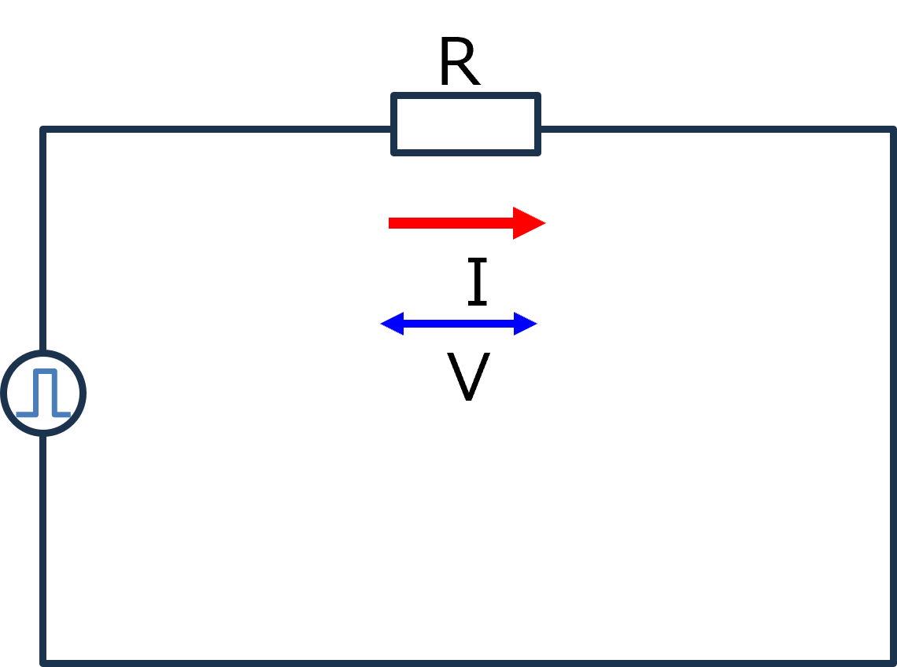
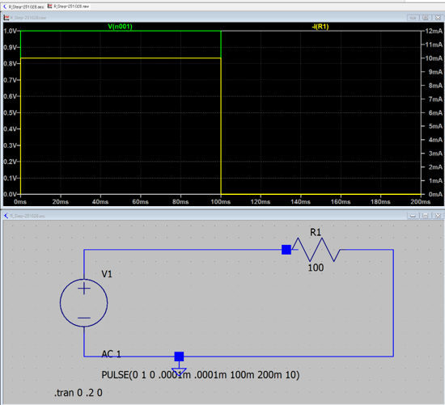

１３－１．ステップ関数（R回路）
このページからは，入力が正弦波ではなくステップ関数の場合の応答を調べていきます．
まずは，簡単な抵抗のみの回路について

入力はステップ関数となるので，
\(\Large V(t) \ : \ V_0 \ (t \geq 0) \)
\(\Large \hspace{35 pt} : \ 0 \ (t < 0) \)
となります．
\(\Large V(t) = R \cdot I(t) \)
となるので，
\(\Large I(t) = \frac{1}{R} \cdot V(t) \)
実際にRステップ回路を作ってみてシミュレートしてみました．

条件は，
R = 100 Ω
V0 = 1 V
ということで，
\(\Large I(t) = \frac{1}{100} \cdot 1 = 10 \ mA \)
となり，シミュレーション通りとなります．
これはとても簡単ですね．
次は，C回路のステップ応答です．